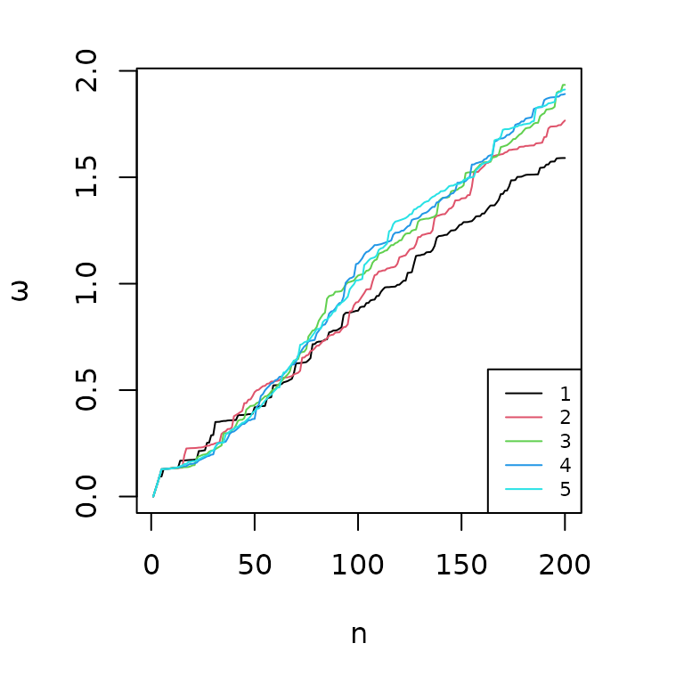

Gene relevance based on multiple evidences in complex networks.
Noemi Di Nanni & Ettore Mosca
2019-05-8
mND.Rmd
Description
This document describes the R package mND (Di Nanni et al. 2019), a new network diffusion based method for integrative multi-omics analysis.
Installation
The package can be installed from within R:
install.packages(c("devtools", "igraph", "parallel"))
library(devtools)
install_github("emosca-cnr/mND", build_vignettes = TRUE)
library(mND)##Input data The package requires:
- An adjacency matrix (\(A\)) of undirected interaction network \(G\);
- A score matrix \(X0=[x_1, x_2, ..., x_L]\), in which each column \(x_i\) (layer) represents a score vector over all vertices of \(G\).
- The number of top k-neighbour to consider (\(k\)).
Optional arguments are:
- Number of permutations (\(r\)) of the input matrix;
- Number of cores (\(cores\)).
Summary
All the analysis can be run using the following functions:
W <- normalize_adj_mat(A)
X0_perm <- perm_X0(X0, r = 50, W)
Xs <- ND(X0_perm, W, cores = 4)
ind_adj <- neighbour_index(W)
mND_score <- mND(Xs, ind_adj, k = 3, cores = 4)
mND_score <- signif_assess(mND_score)
class_res <- classification(mND_score, X0, Hl, top, alpha)
plot_results(mND_score, class_res, W, n = 150, directory = "~/mND_results")Most of the analyses can be easily carried out through the wrapper
function framework_mND:
W <- normalize_adj_mat(A)
mND_score <- framework_mND(X0, W, k = 3, r = 50, cores = 4)
class_res <- classification(mND_score, X0, Hl, top, alpha)
plot_results(mND_score, class_res, W, n = 150, directory = "~/mND_results")##Case study: integration of mutation and expression changes in breast cancer As proof of principle, mND is applied to find functionally related genes on the basis of gene mutations (\(L_1\)) and gene expression variation (\(L_2\)) in breast cancer (BC).
Somatic mutations and gene expression data from matched tumour-normal samples (blood for SM and solid tissue for GE) were collected from The Cancer Genome Atlas (TCGA) (Tomczak et al. 2015) for BC, using the R package TCGAbiolinks (Colaprico et al. 2015) and considering the human genome version 38 (hg38).
Mutation Annotation Format files were obtained from 4 pipelines: Muse (Fan et al. 2016), Mutect2 (Cibulskis et al. 2013), SomaticSniper (Larson et al. 2011), Varscan2 (Koboldt et al. 2012). Only mutation sites detected by at least two variant callers were considered. Gene mutation frequencies (\(f\)) were calculated as the fraction of subjects in which a gene was associated with at least one mutation.
Gene expression data were obtained using the TCGA workflow ``HTSeq-Counts’’. The R package limma (Ritchie et al. 2015) was used to normalize and quantify differential expression in matched tumor-normal samples, yielding log-fold changes, the corresponding p-values and FDRs (BH method).
Adjacency matrix (\(A\)) of undirected interaction network STRING (Szklarczyk et al. 2015) was used; \(X0\) matrix was defined as the two column vectors: \(x_1 = f\) and \(x_2 = -log_{10}(FDR)\).
You can load \(X0\) and \(A\) as follows:
library(mND)
data(X0)
head(X0,3) #L1: mutations, L2: gene expression variations
## L1 L2
## FAM3C 0 0.5039283
## VTI1B 0 2.3264157
## MAGED2 0 3.1520429
data(A) #adjacency matrix of STRING itnteractomeLet’s normalize the adjacency matrix \(W\) and create 50 permutations of \(X0\). The list X0_perm has 51 elements, the
first is the input matrix \(X0\), the
others are its permutations; you can load precomputed permutations using
data(X0_perm), these permutations are obtained with seed
equal to 2.
library(mND)
W <- normalize_adj_mat(A)
X0_perm <- perm_X0(X0, r = 50, W, seed_n = 2)Now, let’s apply network diffusion to our list X0_perm; you can load
precomputed diffused scores using data(Xs):
Network-diffusion, which quantifies the network proximity of each gene to other altered genes (positive elements of \(x_1\) and \(x_2\)), transformed the input vector \(x_1\) and \(x_2\) into \(x_1^*\) and \(x_2^*\) respectively.
Let’s use the function neighbour_index to retrive the
list of gene neighbours indexes from the adjacency matrix:
library(mND)
ind_adj <- neighbour_index(W)Now, we can apply mND function to find functionally
related genes on the basis of \(x_1^*\)
and \(x_2^*\) and their top \(k\) neighbours; precomputed mND scores
(calculated with \(k = 3\)) are
included in mND package data (i.e. data(mND_score)). The
value of \(k\) can be optimised
exploring the effect of values around 3 on the ranked gene list provided
by mND in output (see the optimize_k function).
Empirical \(p\)-values are calculated by using the pool of \(r\) permutated versions of \(X0\):
library(mND)
mND_score <- signif_assess(mND_score)Lastly, let’s classify genes in every layer. We define the set of the high scoring genes as:
- \(H_1\): genes with a mutation frequency greater than zero;
- \(H_2\): top 1200 differentially expressed genes (FDR < \(10^-7\)). Further, we set the cardinalities of gene sets \(N_1\) and \(N_2\), containing the genes with the highest scoring neighborhoods, as \(|H_1|=|N_1|\) and \(|H_2|=|N_2|\).
library(mND)
data(X0)
Hl <- list(l1 = rownames(X0[X0[,1]>0,]),
l2 = names(X0[order(X0[,2], decreasing = T),2][1:1200])
)
top_Nl <- unlist(lapply(Hl, function(x) length(x)))
top_Nl
## l1 l2
## 1238 1200
class_res <- classification(mND_score, X0, Hl, top = top_Nl)
#Classification of genes in every layer
head(class_res$gene_class)
## L1 L2
## TP53 I L
## TRIM28 M NS
## CCNB1 M M
## RPS27A M L
## UBA52 M L
## CCNA2 L M
#Occurrence of (M; L; I; NS) for each gene across layers
head(class_res$occ_labels)
## I L M NS
## TP53 0.5 0.5 0.0 0.0
## TRIM28 0.0 0.0 0.5 0.5
## CCNB1 0.0 0.0 1.0 0.0
## RPS27A 0.0 0.5 0.5 0.0
## UBA52 0.0 0.5 0.5 0.0
## CCNA2 0.0 0.5 0.5 0.0A summary of previous results can be obtained with
plot_results function, that gives in output the following
plots:
- genes ranked by mND score and the corresponding p-value;
- gene networks composed of the top \(n\) ranking genes;
- gene classification for the top 100 ranking genes across layers; legend: brown: isolated; orange: linker; purple: module; grey: not significant.
library(mND)
plot_results(mND_score, class_res, W, n = 150, directory = "~/mND_results")###Optimization of k value
An opportunity to optimize the value of \(k\) relies in selecting a value that yields
connected networks enriched in initial scores; the
optimize_k function can be used for such objective.
Let’s use the optimize_k function to create a list with
mND scores calculated for different \(k\) values (\(1
<= k <= 5\)) and evaluate which value of \(k\) yields connected networks enriched in
initial scores. You can load precomputed results using
data(k_results).
library(mND)
k_val <- seq(1,5,1)
k_results <- optimize_k(Xs, X0, k_val, ind_adj, W, top = 200, cores = 4)\(k = 3\) is a reasonable choice to obtain connected gene networks enriched in genes with the highest mutation frequencies and expression variations.

##References